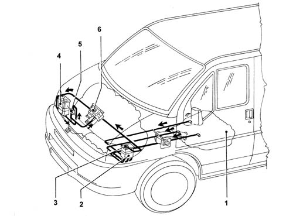
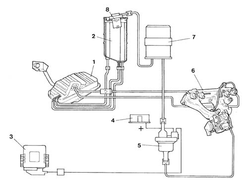
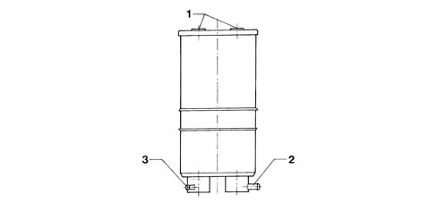
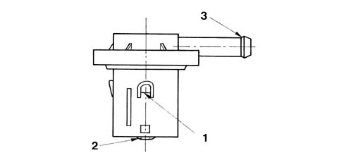
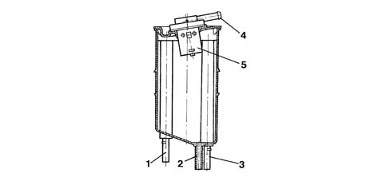
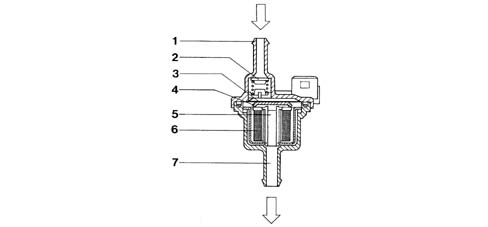

CONSTRUCTION SPECIFICATIONS
- Path
- Descriptions > 10 ENGINE > 1080 EXHAUST EMISSION CONTROL SYSTEM > 1080E EVAPORATION CONTROL SYSTEM > CONSTRUCTION SPECIFICATIONS
- Kind
- system description
- Applies to
- engines: 2.0 16V; all production periods
- Interactive page
- https://sloeber94.github.io/elrnDB-fDct/en/#/244000419
Applies to: engines: 2.0 16V; all production periods


ACTIVE CHARCOAL FILTER

MULTIFUNCTION VALVE

FUEL VAPOUR SEPARATOR

FUEL VAPOUR CUT-OFF SOLENOID (CARBON FILTER SCRUBBING)
